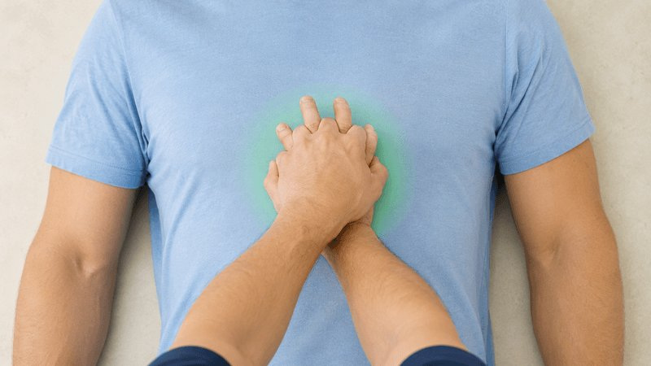

敢救
急救情景训练与评估系统
不是为了训练你成为专业急救员，而是希望通过训练记住几个关键知识点，在真正遇到紧急情况时——
多一点不旁观的勇气
历史最佳：-- 分
👇 推荐从这里开始完整训练
敢救，也要先保护自己。
请选择最正确的做法（单选）
一个人不必完成所有事。敢救的第一步，是大声呼救并让更多人参与。
请告诉我发生了什么？
记住这 10 秒：轻拍重唤，观察胸廓起伏，判断是否需要立即开始 CPR。
🩺 判断反应与呼吸
轻拍双肩并大声呼喊，随后观察胸廓起伏，判断时间不超过 10 秒。
👆 点击 "轻拍双肩" 开始检查患者反应
🎯 按压30次 · 深度5-6cm · 频率100-120次/分 · 胸廓完全回弹 ｜ 准备开始
💡 按住光圈≈深度 · 跟随脉冲≈频率 · ⌨空格或点击

📷 医学插画（离线模式）贴片位置：右上胸锁骨下 + 左侧腋前线
';}">如持续显示此提示，请检查网络或刷新页面
深度：5-6cm（成人）
频率：100-120次/分钟
关键：每次让胸廓完全回弹，中断不超过10秒。
💨 人工呼吸
完成 30 次胸外按压后，开放气道并进行 2 次有效通气。
📋 每次人工呼吸约 1 秒，以胸廓出现可见起伏为有效通气标准。敢救，是按正确步骤来，不急不躁。
👆 第一步：点击 "仰头抬颏" 开放气道
吹气量：看到胸廓隆起即可（约500-600ml）。
比例：按压-通气比 30:2。
📋 AED 会一步步语音提示你。敢救不是靠蛮勇，而是学会跟随正确流程。电击时记得喊：闪开！
自动体外除颤仪
AED通过高电压电击使所有心肌细胞同时除极化→窦房结重获主导→恢复窦性心律。
贴片位置：右锁骨下 + 左腋前线（前侧位）。
关键提示：AED 越早使用，通常越有利于提高生存机会。对于不可除颤心律（如心搏停止），AED不会建议电击，此时应立即持续CPR。
30:2 循环进度
30次 → 吹气
2次
当前已完成 0 轮循环
🤔 操作决策：患者现在有反应吗？
每轮CPR后都应快速判断患者状态
建议呼叫旁人轮换（2分钟轮换原则）
高质量CPR需要持续不间断——中断超过10秒冠状动脉灌注压会下降。
记住：按压不停，生命不止。
本次训练帮助你在情景中记住关键步骤。真正的价值，是让你在未来遇到类似场景时，能多一点判断和行动的勇气。
📊 六维能力分析
🔗 急救决策树
🎯 表现复盘标签
💡 训练评语与复习建议
📝 训练总结
📘 急救知识库
🖐️ 如果只记住 5 件事
- 先确认现场安全，不要盲目冲上去。
- 轻拍重唤，10 秒内判断反应和呼吸。
- 立刻呼叫 120，并指定旁人取 AED。
- 胸外按压要足够深、足够快、尽量少中断。
- AED 到达后立即开机，按语音提示操作，电击时所有人离开患者。
敢救，不是盲目冒险，而是在记住关键步骤后，愿意比旁观多做一步。
🎓 训练证书
输入你的名字生成训练记录
📚 科学依据与免责声明
重要声明：本作品为急救科普模拟训练，不能替代线下急救培训或专业医疗建议。真实紧急情况应立即拨打 120，并听从调度员指导。
参考来源：
1. 2020 American Heart Association Guidelines for CPR and ECC
2. 中国红十字会与中国急救相关公开科普资料
3. AED 厂商通用使用说明及权威急救机构资料
📚 参考文献与指南依据
- American Heart Association. 2020 Guidelines for CPR and ECC.
- 中国心肺复苏专家共识，2018。
- 中国红十字会应急救护培训相关资料。
- 高中健康教育与生命安全教育相关教材内容。
AED·1/8
⚡ AED是什么？
自动体外除颤器——公共场所的救命神器
关于AED，以下说法正确的是？
AED·2/8
🫀 识别心脏骤停
什么时候需要使用AED？
需要AED的情况：
✅ 无反应+无呼吸
✅ 无反应+濒死喘息
✅ 突然倒地+无意识
不需要AED：
❌ 有呼吸有意识
❌ 能正常说话
❌ 只是晕厥但有脉搏
有人倒地，你应该首先做什么？
AED·3/8
🔘 第一步：开机
打开AED电源——一切从这里开始
找到AED后，按下绿色电源按钮
AED会立即发出语音提示，告诉你每一步该做什么。
部分型号打开盖子即自动开机。
注意：AED一旦开机就不要关闭，直到急救人员到达。
AED通常放在什么地方？
AED·4/8
📍 第二步：贴电极片
正确的电极片位置至关重要
右上胸
右锁骨下方
胸骨右缘
左下侧
左腋前线第5肋间
心尖部
贴电极片前需要注意什么？
AED·5/8
🔍 第三步：分析心律
AED自动判断是否需要电击
分析心律时，以下做法正确的是？
💡 AED能识别两种心律：需电击（室颤/无脉室速）vs 不需电击（正常心律/停搏）
AED·6/8
⚡ 第四步：安全放电
电击前必须确保所有人的安全
⚠️ 电击前安全确认清单：
AED·7/8
🔄 特殊情况 + 电击后CPR
以下特殊情况的处理，正确的是？
电击后最重要的是：
⚡ 电击后→立即恢复CPR！
从胸外按压开始，不要浪费时间检查脉搏
AED会在2分钟后自动再次分析心律
AED专项训练·完成！
气道梗阻·1/9
🫁 认识气道梗阻
气道异物梗阻是一类需要快速识别和处理的急症
容易引发气道梗阻的高危食物包括？
⚠️ 老人和5岁以下儿童是最高风险人群
气道梗阻·2/9
🔍 识别：部分梗阻 vs 完全梗阻
这是决定是否需要干预的关键判断
部分梗阻：
✅ 能咳嗽（有力）
✅ 能说话
✅ 能呼吸（有喘鸣音）
→鼓励咳嗽！不要干预！
完全梗阻：
❌ 无法咳嗽
❌ 无法说话
❌ 双手抓喉（窒息手势）
❌ 面色发紫
→立即海姆立克！
有人呛到后还能咳嗽说话，你应该？
气道梗阻·3/9
👤 成人海姆立克法详解
"剪刀、石头、布"——全世界通用的救命三招
🫱 第一步·剪刀：站在患者背后，用两指找到肚脐位置，向上两横指，这就是冲击点。
✊ 第二步·石头：一手握拳，拳心朝向患者腹部，放在刚才定位的冲击点上。
🖐️ 第三步·布：另一只手包住拳头，双手紧扣。
🔄 第四步·冲击：用力向内上方（45°角）快速冲击，每次冲击要果断有力。连续5次为一组。
海姆立克冲击的正确方向是？
气道梗阻·4/9
✍️ 成人海姆立克·实战练习
施救者站姿和手臂位置？
如果5次冲击后异物仍未排出？
气道梗阻·5/9
🤰 孕妇与肥胖者的海姆立克
冲击位置必须改变——否则可能造成伤害
为什么不能冲击腹部？
孕妇：冲击腹部会压迫子宫，可能导致胎盘早剥、胎儿损伤。
肥胖者：腹部脂肪过厚，冲击力无法有效传递到膈肌。
✅ 正确做法：胸部冲击法——站到背后，双手放在胸骨中下段（和CPR按压位置相同），向内后方冲击。
孕妇海姆立克冲击位置在？
气道梗阻·6/9
👶 婴儿气道梗阻急救
婴儿(<1岁)的急救方法完全不同！
1️⃣ 体位：将婴儿面朝下放在你的前臂上，用手托住头部和下颌，头部低于躯干。
2️⃣ 5次拍背：用另一只手掌根部，在婴儿两侧肩胛骨之间用力拍击5次。
3️⃣ 翻转：将婴儿翻转为面朝上，保持头部低于躯干。
4️⃣ 5次压胸：用两根手指（食中二指）在胸骨下半段（两乳头连线下方）快速按压5次，深度约4cm。
5️⃣ 交替重复：5次拍背+5次压胸为一组，反复进行直到异物排出或婴儿失去反应。
婴儿急救时绝对禁止？
气道梗阻·7/9
🆘 自救法 + 轮椅患者
如果你独自一人被噎住，无法出声呼救：
方法一·椅背法：找到一个坚固的椅背或桌角，对准上腹部（肚脐上方），用身体重量向下冲击。
方法二·拳头法：自己用拳头对准上腹部，另一只手包住，向内上方快速冲击。也可以靠在墙上增加力度。
⚠️ 关键：自救要趁还有意识的时候！一旦感觉呼吸困难立即行动，不要犹豫。同时尽量发出声音或制造响动吸引注意。
轮椅上的患者海姆立克应该？
气道梗阻·8/9
🆘 患者昏迷后怎么办
梗阻→昏迷=立即转换急救模式！
1️⃣ 安全放平：将患者轻轻平放在地面上。
2️⃣ 立即呼叫120：如果之前没有呼叫，现在必须立即呼叫！
3️⃣ 开始CPR：从30次胸外按压开始。注意：胸外按压本身也可能帮助排出异物，因为按压产生的胸内压变化可能推动异物移动。
4️⃣ 检查口腔：每次打开气道准备吹气前，快速看一下口腔内有无可见的异物。如果看到，小心取出。不要盲目用手指扫荡。
5️⃣ 持续CPR：30:2循环不要停，直到救护车到达或患者出现反应。
气道梗阻急救·完成！
创伤急救·1/8
🩹 现场安全：保己救人
急救第一铁律——先确保自身安全
到达事故现场，首要步骤是？
创伤急救·2/8
🔤 初步评估：DRABC法则
系统化的伤情评估流程
D - Danger 危险：评估环境是否安全
R - Response 反应：拍肩呼唤，判断意识
A - Airway 气道：检查气道是否通畅
B - Breathing 呼吸：观察胸廓起伏10秒
C - Circulation 循环：检查有无严重出血
DRABC中，发现严重出血应该？
创伤急救·3/8
🩸 止血法一：直接压迫
最基本、最重要、最有效的止血方法
🖐️ 操作方法：
1. 用干净纱布/布料/毛巾直接覆盖伤口
2. 用手掌用力持续按压（不要松开看是否止血！）
3. 如果纱布被血浸透，不要取下——在上面再加一层继续压
4. 持续按压至少10-15分钟，不要频繁松手查看
5. 如果多层敷料后仍无法控制出血，考虑使用止血带（见下页）
直接压迫止血时，多久检查一次出血情况？
创伤急救·4/8
🪢 止血法二：止血带
仅用于四肢大动脉喷射状出血——最后手段
⚠️ 止血带使用指征（同时满足）：
✅ 四肢严重出血（喷射状/涌出状）
✅ 直接压迫止血无效
✅ 有专业止血带或可制作临时止血带
📌 操作要点：
📍 位置：伤口近心端5-8cm处（不要扎在关节上）
🕐 记录时间！在额头或止血带上写下使用时间
⏰ 上好止血带后不要自行松开！在额头或止血带上记录使用时间
🚫 是否放松由专业医疗人员决定——尽快转运至医院
创伤急救·5/8
🩹 伤口包扎技术
包扎的目的和原则：
✅ 保护伤口——防止污染和感染
✅ 加压止血——辅助止血
✅ 固定敷料——保持敷料在位
✅ 减轻疼痛——减少移动
❌ 不要做的事：给伤口上药、用脏布包扎、包扎过紧阻断循环
三角巾/绷带包扎后如何检查是否过紧？
创伤急救·6/8
🦴 骨折的临时固定
骨折固定的关键原则：
📌 不移动伤肢——除非有立即危险
📌 固定上下两个关节——夹板必须跨越骨折部位上下各一个关节
📌 用硬物做夹板——木板、杂志卷、硬纸板、甚至健侧肢体
📌 用软物做衬垫——衣服、毛巾垫在夹板和皮肤之间
📌 上肢骨折——用三角巾悬吊于胸前
📌 下肢骨折——用健侧腿做天然夹板，两腿之间垫软物后捆绑
创伤急救·7/8
🚑 脊柱损伤与安全搬运
错误的搬运可能造成严重后果
⚠️ 哪些情况下必须怀疑脊柱损伤？
🚗 车祸/高处坠落/头部外伤
🏊 跳水受伤/运动碰撞
😵 伤者诉说颈部或背部疼痛
🦵 肢体麻木/无力/无法动弹
✅ 安全搬运法——多人平托法：
1. 至少3-4人同时操作
2. 一人固定头部和颈部（保持中立位）
3. 其他人同时用手臂托起肩、腰、臀、腿
4. 保持头颈躯干一条直线，整体平移
5. 放在硬质担架或门板上